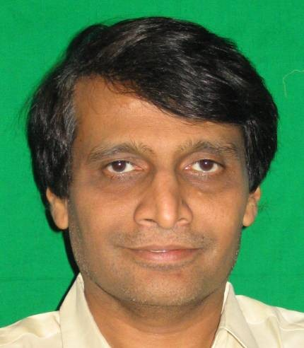

सुरेश प्रभु

प्रमुख कार्यकाल:
रेल मंत्रालय, कैबिनेट मंत्री
२०१४ - २०१७
भारी उद्योग और सार्वजनिक उद्यम मंत्रालय, कैबिनेट मंत्री
२००२ - २००२
नागरिक उड्डयन मंत्रालय, कैबिनेट मंत्री
२०१८ - २०१९

पहला अटल बिहारी वाजपेयी मंत्रिमंडल
उद्योग मंत्रालय
कैबिनेट मंत्री
दूसरा अटल बिहारी वाजपेयी मंत्रिमंडल
तीसरा अटल बिहारी वाजपेयी मंत्रिमंडल
पहला नरेंद्र मोदी मंत्रिमंडल
पहला अटल बिहारी वाजपेयी मंत्रिमंडल

1_Upload_1608.pdf

अटल बिहारी वाजपेयी
o-Atal_Bihari_Vajpayee.htmlप्रधान मंत्री
१६ मई १९९६ - १ जून १९९६
सुरेश प्रभु
o-Suresh_Prabhu.htmlकैबिनेट मंत्री
१७ मई १९९६ - १ जून १९९६
प्रासंगिक आदेश
1_Upload_1608.pdf[8]१७ मई १९९६मंत्रिमंडल1_Upload_2127.pdf[8]१७ मई १९९६मंत्रिमंडल